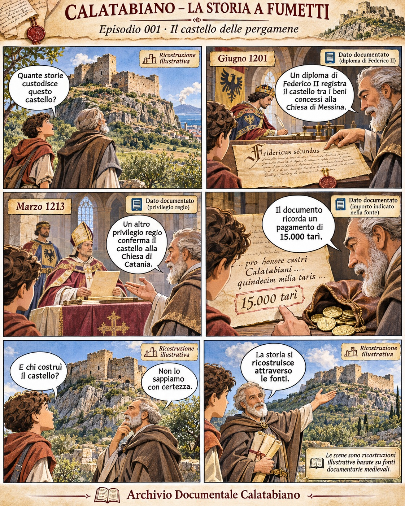

Episodio 001 · Medioevo
Il castello delle pergamene
Nel giugno 1201 Federico II concesse Calatabianum e le sue pertinenze alla Chiesa di Messina. Nel marzo 1213 Costanza ed Enrico confermarono alla Chiesa di Catania il castello e le sue pertinenze, ricordando un pagamento di 15.000 tarì. Le testimonianze non stabiliscono l'anno di fondazione della fortezza.
Fonti: MGH, Die Urkunden Friedrichs II., I, n. 33, pp. 67–70; Christian Hillen, Die Urkunden des Königs Heinrichs (VII.), 2007, n. 4, pp. 47–49. Il privilegio del 1213 non è il contratto di compravendita.
Fonti e documenti · Il privilegio del 1213
Leggi la tavola a piena dimensioneLeggi il testo delle vignette
- Quante storie custodisce questo castello?
- Nel giugno 1201 un diploma di Federico II registra la concessione alla Chiesa di Messina.
- Nel marzo 1213 un privilegio regio conferma il castello alla Chiesa di Catania.
- Il documento ricorda un pagamento di 15.000 tarì.
- Chi costruì il castello? Non lo sappiamo con certezza.
- La storia si ricostruisce attraverso le fonti.